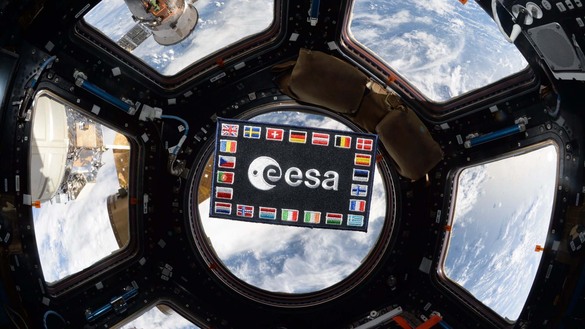
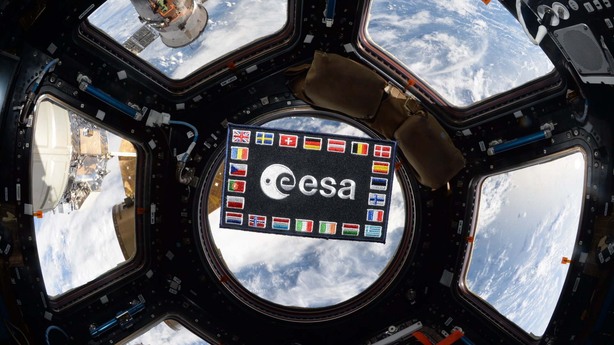

ESA facts
The European Space Agency (ESA) is Europe’s gateway to space. Its mission is to shape the development of Europe’s space capability and ensure that investment in space continues to deliver benefits to the citizens of Europe and the world.
ESA is an international organisation with 22 Member States. By coordinating the financial and intellectual resources of its members, it can undertake programmes and activities far beyond the scope of any single European country.
 

What does ESA do?
In short, ESA’s job is to draw up the European space programme and carry it through. ESA's programmes are designed to find out more about Earth, its immediate space environment, our Solar System and the Universe, as well as to develop satellite-based technologies and services, and to promote European industries. ESA also works closely with space organisations outside Europe.
The full definition of our purpose comes from Article II, Purpose, Convention of establishment of a European Space Agency, which states:
ESA's purpose shall be to provide for, and to promote, for exclusively peaceful purposes, cooperation among European States in space research and technology and their space applications, with a view to their being used for scientific purposes and for operational space applications systems:
- by elaborating and implementing a long-term European space policy, by recommending space objectives to the Member States, and by concerting the policies of the Member States with respect to other national and international organisations and institutions;
- by elaborating and implementing activities and programmes in the space field;
- by coordinating the European space programme and national programmes, and by integrating the latter progressively and as completely as possible into the European space programme, in particular as regards the development of applications satellites;
- by elaborating and implementing the industrial policy appropriate to its programme and by recommending a coherent industrial policy to the Member States.
Who belongs to ESA?
Austria, Belgium, Czech Republic, Denmark, Estonia, Finland, France, Germany, Greece, Hungary, Ireland, Italy, Luxembourg, the Netherlands, Norway, Poland, Portugal, Romania, Spain, Sweden, Switzerland and the United Kingdom. Slovenia, Latvia and Lithuania are Associate Members. Canada takes part in some projects under a cooperation agreement.
Bulgaria, Croatia, Cyprus, Malta and Slovakia have cooperation agreements with ESA.
Where is ESA located?
- ESA's headquarters are in Paris which is where policies and programmes are decided. ESA also has sites in a number of European countries, each of which has different responsibilities:
- EAC, the European Astronauts Centre in Cologne, Germany;
- ESAC, the European Space Astronomy Centre, in Villanueva de la Canada, Madrid, Spain;
- ESOC, the European Space Operations Centre in Darmstadt, Germany;
- ESRIN, the ESA centre for Earth Observation, in Frascati, near Rome, Italy;
- ESTEC, the European Space Research and Technology Centre, Noordwijk, the Netherlands.
- ECSAT, the European Centre for Space Applications and Telecommunications, Harwell, Oxfordshire, United Kingdom.
- ESEC, the European space Security and Education Centre, Redu, Belgium.
ESA also has liaison offices in Belgium, USA and Russia; a launch base in French Guiana and ground/tracking stations in various parts of the world.
How many people work for ESA?
There are around 2200 staff working for ESA, from all the Member States and include scientists, engineers, information technology specialists and administrative personnel.
Where do ESA’s funds come from?
ESA’s mandatory activities (space science programmes and the general budget) are funded by a financial contribution from all the Agency’s Member States, calculated in accordance with each country’s gross national product. In addition, ESA conducts a number of optional programmes. Each Member State decides in which optional programme they wish to participate and the amount they wish to contribute.
How big is ESA’s budget?
ESA's budget for 2021 is €6.49 billion. ESA operates on the basis of geographical return, i.e. it invests in each Member State, through industrial contracts for space programmes, an amount more or less equivalent to each country’s contribution.
How much does each European spend on ESA?
European per capita investment in space is very little. On average, every citizen of an ESA Member State pays, in taxes for expenditure on space, about the same as the price of a cinema ticket (in USA, investment in civilian space activities is almost four times as much).
How does ESA operate?
The Council is ESA's governing body and provides the basic policy guidelines within which ESA develops the European space programme. Each Member State is represented on the Council and has one vote, regardless of its size or financial contribution.
ESA is headed by a Director General who is elected by the Council every four years. Each individual research sector has its own Directorate and reports directly to the Director General. The present Director General of ESA is Josef Aschbacher.
For more information:
ESA HQ Bertrand
24 rue du Général Bertrand
CS 30798
75345 Paris CEDEX 7
France
Tel: +33 1 53 69 76 54
Fax: +33 1 53 69 75 60